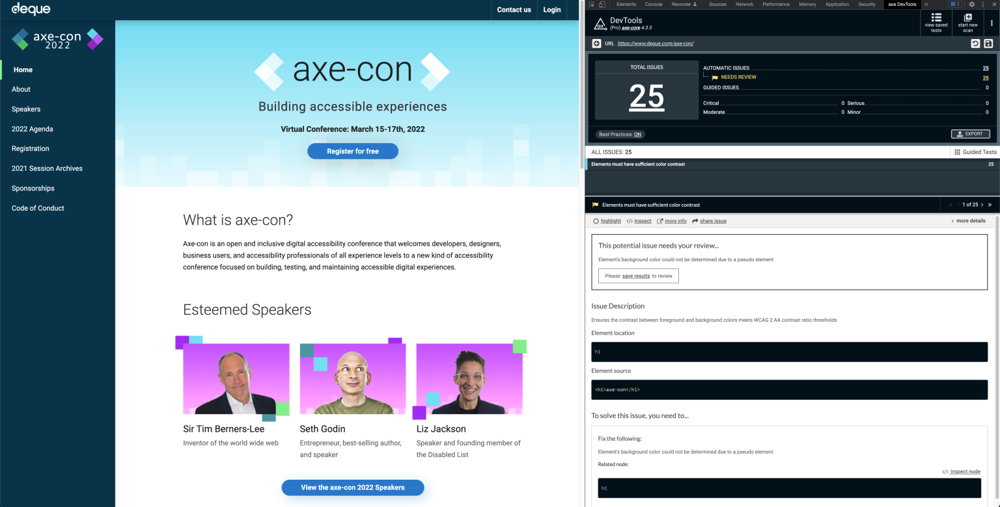

5 Accessibility Quick Wins You Can Implement Today
Let’s face it: building an AA or AAA-accessible product can be quite daunting. Luckily, having an accessible product isn’t all-or-nothing. Even seemingly small improvements can have nice quality of life benefits for many people.
In that spirit, here are five accessibility quick wins you can implement today.
Quick Win 1: Indicate the Current Page
It’s probably safe to assume that a different style is the most common way to communicate the current page of a site or app. However, even if those styles are clear and with great contrast ratios, they’re still only a visual cue.
So what happens if a person with limited vision cannot see that separation? How will they know what page they’re on?
Creating an accessible product is to ensure its markup communicates as clearly as its design.
Adding aria-current="page" to the active navigation element is one way to ensure markup and design communicate the same information with or without assistive technologies.
<a aria-current="page" href="/">Home</a>🎉 Bonus
Use CSS attribute selectors to style the [aria-current="page"] element to keep the visual and markup cues linked.
[aria-current="page"] {
/* Active link styles */
}Quick Win 2: Document Language
While some people can visit a website and determine the language or locale of its content, not all people have that luxury. Again, markup must communicate the same information as the visual design — even if that information may seem implied.
Add the lang attribute to the <html> tag to communicate not only the document’s language, but its locale. This will help assistive technologies like screen readers understand and communicate the content. Even if the app only supports one language, this can be a nice quality of life improvement for many people.
<html lang="en-US"></html>For apps which support multiple languages, the <html> element is likely not the only one to need its lang value defined. Use the lang attribute on specific elements whose language differs from the rest of the document, like links within a language toggle menu. In this case, pair the use of lang with the hreflang attribute to not only communicate the language of the link itself, but also of its destination.
<a lang="fi" hreflang="fi" href="/" title="Suomeksi">
<bdi>Suomeksi</bdi>
</a>Quick Win 3: Use prefers-reduced-motion
Whether drawing attention to actions or updates, or creating a sense of life and charm, adding motion to an app can really elevate its experience. However, some people may find that experience disorienting.
Windows and MacOS both offer a setting at the OS level for people to greatly reduce the amount of motion when using their systems. The prefers-reduced-motion setting can greatly improve the experience on a computer, but it does not extends beyond the UI of the operating system. So wouldn’t it be nice if our apps could respect that same system setting and provide a more static experience for those who prefer it?
Well, with CSS media queries, they can.
The prefers-reduced-motion media query can be used to greatly reduce or remove all motion from an app whenever the system setting is enabled.
[INSERT CODEPEN]
@media (prefers-reduced-motion: reduce) {
* {
animation-duration: 0.01ms !important;
animation-iteration-count: 1 !important;
transition-duration: 0.01ms !important;
scroll-behavior: auto !important;
}
}The blanket approach shown here prevents all motion, but it can leave little room for nuance. It’d be best to review the needs of those using the product, but consider these other options as well.
One approach could be to only animate one property at a time in prefers-reduced-motion settings. So consider a <Modal /> that fades and scales into view with opacity and transform. In reduced motion environments, only the opacity would transition. The scaling effect would be removed as they are more commonly problematic than fading.
Another option could be to look at the prefers-reduced-motion environment a bit more literally and remove all motion. This would do away with our scaling modals, sliding drawers, and bouncing notifications, but would still leave room for color transitions on links and buttons.
Quick Win 4: Indicate Data Sorting State
A common theme across all of these tips is to ensure that an app’s visual design and markup communicate the same things. So, when the design uses an arrow to indicate the sort direction of a table column, how can that also be communicated in the markup?
Setting the aria-sort attribute to ascending /descending on the header of the actively-sorted column allows the markup to communicate the same content structure as a visual indicator in the UI.
This will help ensure that people using assistive technologies and those who aren’t can understand the content in the same way.
<thead>
<tr>
<th>First Name</th>
<th aria-sort="ascending">Last Name</th>
</tr>
</thead>Quick Win 5: Lazy Loading Lists
Whether scrolling through an endless stream of tweets or through an impossible-to-decide list of products, the web has fully embraced lazy loading long lists (and alliteration, apparently).
This is when the aria-setsize and aria-posinset attributes become very valuable. While a person’s progression through the list can be communicated visually in many different ways, these attributes are used to communicate that same progression to many assistive technologies.
As developers, we likely have access to the length of an entire list as well as the index of the current items being displayed. With that, the aria-setsize attribute would define the total length of the list, while the aria-posinset attribute would define an item’s specific position (or index) within that list.
If the total length of the list is not known, then aria-setsize should be set to -1.
With these attributes, assistive technologies can better interpret a list and a person can better understand their position within it.
<h2 id="top-artists-title">Top Artists of 2021</h2>
<ul role="listbox" aria-labelledby="top-artists-title">
<li role="option" aria-setsize="20" aria-posinset="5">Bloodbound</li>
<li role="option" aria-setsize="20" aria-posinset="6">Manimal</li>
<li role="option" aria-setsize="20" aria-posinset="7">Powerwolf</li>
</ul>Take a listen to how these attributes are announced using MacOS VoiceOver.
🎉 Bonus Win: Axe-DevTools Extension
Implementing those five accessibility quick wins is a great start, but that’s exactly what it is — a start. There’s a sprawling landscape of assistive technologies and sets of abilities a person can posses, and navigating it all alone can feel overwhelming.
Fortunately, there are plenty of tools to help with auditing a product’s accessibility that make the journey much more manageable. My personal favorite — my trusty accessibility compass — is the Axe-DevTools browser extension.
Running the Axe-DevTools accessibility scanner can return tons of valuable information. Not only will it display all issues and warnings found on the page, but it groups them by approximate severity. It can also highlight the element on the page or in the Elements tab and provide links to learn more about the specific issue.
However, most importantly, it will offer clear and concise approaches to fix the specific issue.
An example of an Axe Dev Tools accessibility scan result.

Wrapping Up
A product isn’t made accessible overnight; nor is a product’s accessibility work ever really complete. Like anything else on the web, accessibility evolves and requires maintenance. However, even seemingly small additions can have an impact on a product’s accessibility and a person’s overall experience.
After stepping into a new codebase, these are often some of the first few things I look into — some “low-hanging fruit” of accessibility, if you will.
Reaching AAA or even AA conformance can feel like scaling an 8,000 meter peak. These steps won’t carry you to the summit, but an expedition is never completed in a single stride.
Resources
- Learn more about the
aria-currentattribute - Learn more about the
langattribute - Learn more about the
hreflangattribute - Learn more about
prefers-reduced-motion - Learn more about the
aria-sortattribute - Learn more about the
aria-setsizeattribute - Learn more about the
aria-posinsetattribute - Axe-DevTools browser extension
- Follow @DanielYuschick on Twitter